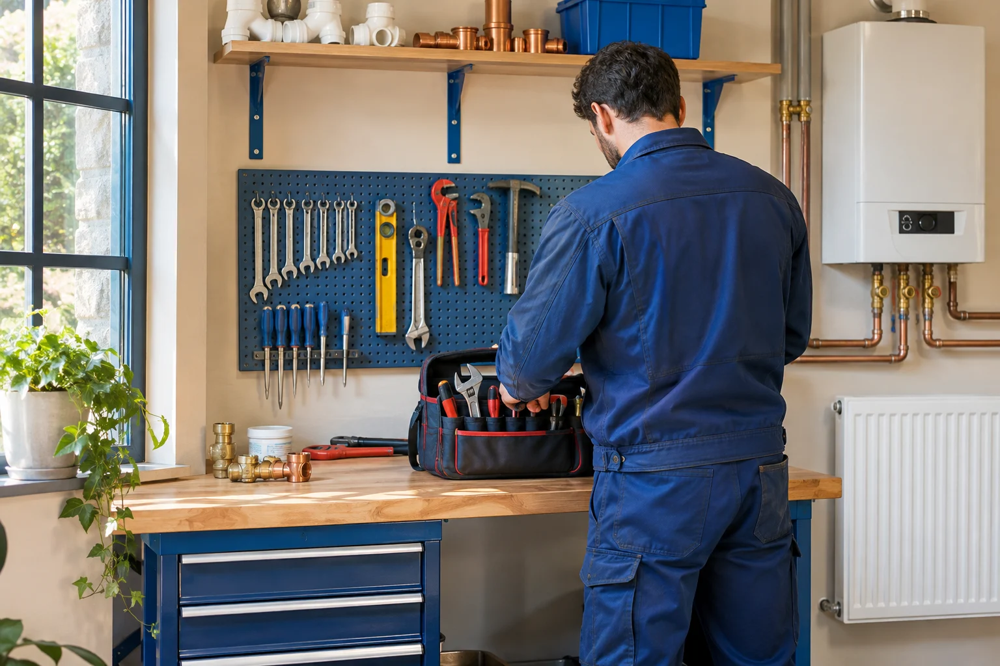

Du bâtiment au chauffage
Créée en 1986 dans la maintenance du bâtiment, notre entreprise s’est orientée vers le chauffage en 1989. Nous associons installation, remplacement et entretien des équipements.
Depuis 1986, notre parcours relie maintenance du bâtiment, chauffage et plomberie.

Créée en 1986 dans la maintenance du bâtiment, notre entreprise s’est orientée vers le chauffage en 1989. Nous associons installation, remplacement et entretien des équipements.
Après avoir rejoint le réseau France Chauffage en 2000, l’entreprise est présentée sous le nom SARL JF RENOUS depuis janvier 2025. Nous sommes installés au 37 avenue Georges Clemenceau, à Pineuilh.
Chauffage, climatisation, plomberie et sanitaire : nos métiers couvrent différents besoins du bâtiment. Nous intervenons également sur les stations de pompage et le traitement des eaux.
Le secrétariat centralise les rendez-vous et les demandes d’intervention. Précisez votre commune, votre équipement et les travaux envisagés pour préparer notre échange.